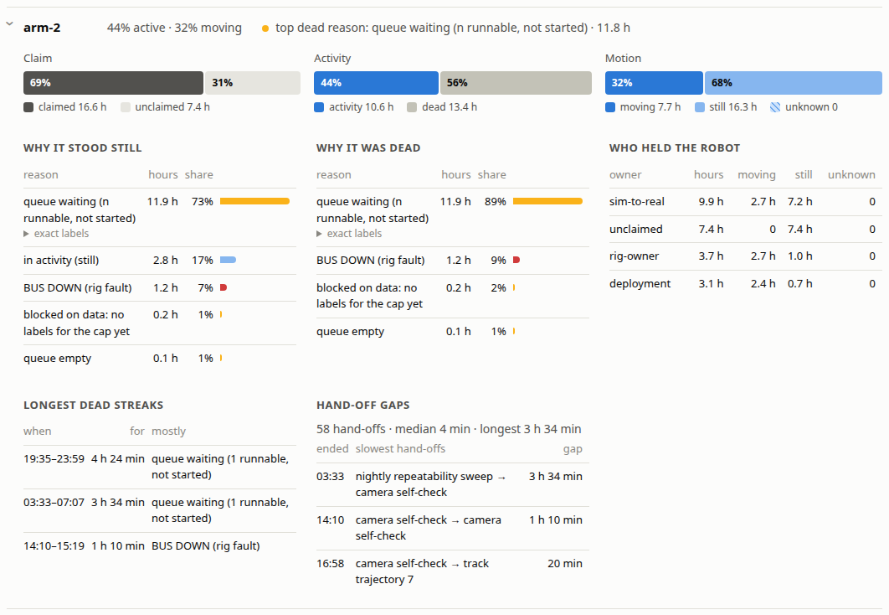
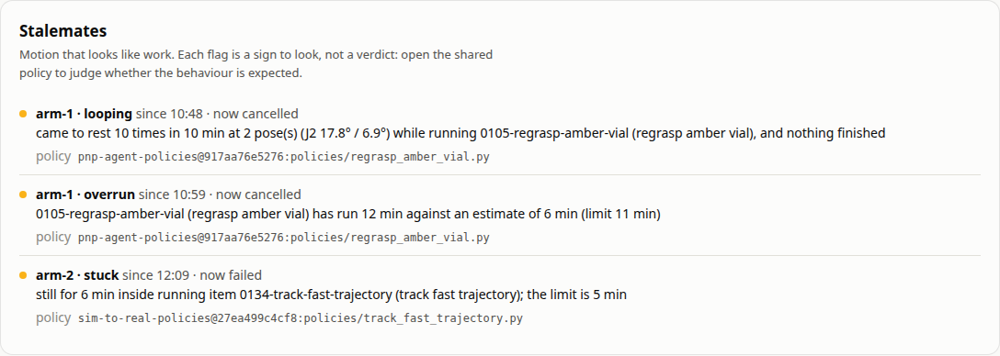
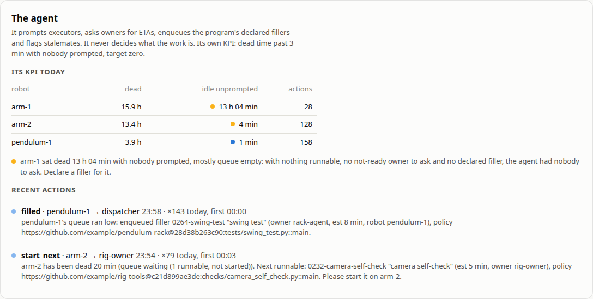
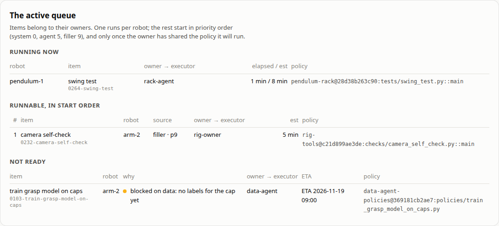

robot_activity · v0.1.0 · MIT
Robot Activity Agent
Keep every robot doing useful work, and say why when it isn't.
A robot that could be working and isn't is wasted capital, the way an idle press is in a plant. This is a drop-in member of any robotics team with exactly that remit: it measures activity per robot and per fleet, keeps a work queue full and moving, flags stalemates, and prompts the right people. It never decides what the work is.
The real dashboard replaying the demo fleet's day: dashboard(…, until=T) rendered every 36 sim-minutes and screenshotted by headless Chrome, with the per-robot, stalemate and queue panels folded away so the agent's latest actions stay in frame. Simulated data. GIF.

What it does, and never does
A member of the team with one remit, written as a role prompt any agent harness can load (AGENT.md).
Does
- Owns the activity numbers, per robot and for the fleet, out of every tracked hour.
- Says why every dead or still hour happened: a fault, blocked on code, queue waiting, nothing dispatched, unclaimed.
- Keeps a full, moving queue: prompts the executor of the next runnable item, asks owners for ETAs, enqueues the program's own declared fillers.
- Flags stalemates: stuck, looping between the same two poses, or past its estimate, with the policy to read.
Never does
- Decides what the work is. Every item belongs to its owner: an agent, a person, or the deployed system.
- Starts, finishes, blocks or edits anyone's item, or writes job content.
- Optimises hours moving for its own sake. It is a proxy; inventing motion is the stalemate it exists to catch.
- Investigates a fault itself. It routes it to the owner and the dispatcher, with what it saw.
Its loop, every tick, per robot
- Dead for 3 min or more? A runnable item waits: prompt its executor, naming the item, its estimate and its policy. Nothing runnable: ask the owners of the top not-ready items for an ETA, with each item's reasons, once per answer.
- Queue low? Enqueue the program's declared fillers (recalibrate, self-test, a hard task to practise), then ask for ETAs if it is still low.
- Stalemate? Tell the item's owner and the dispatcher, with the shared policy to read.
Its own KPI is idle unprompted: dead time past 3 minutes with nobody prompted. The target is zero, and it is the agent's alone.
Three clean splits of tracked time
Every tracked second of every robot falls on exactly one side of each split. Tracked time is the sum of the rows' windows; a gap with no rows (the sampler was down) is untracked, never idle. Utilisation = activity ÷ all tracked hours.
The demo fleet's day: three robots, 72 tracked hours, 54% utilisation.
- Claim claimed / unclaimed
Someone (claimed_by) holds the robot. - Activity activity / dead
Claimed, a queue item dispatched, and healthok. Being still inside a running item is still activity. - Motion moving / still / unknown
From the joints: any joint's range above 0.3° in the window. Unknown (no joint feed) is never counted as idle.
Tool 1
Metrics: where every hour went, and why
One self-contained HTML dashboard per day (no network, light and dark, phone-width safe), a one-line terminal summary, and the same numbers as JSON. Utilisation per robot, the three splits, why each robot stood still, who held it, the longest dead streaks, the hand-off gap from one item to the next, and stalemate flags. Open the demo dashboard.



Tool 2
The queue, and a view of the active queue
The queue is files a human can read: one JSON file per item, an append-only events ledger and a lock. Programs that never import the package use the CLI. This is the real robot-activity queue on the demo fleet as its ledger stood at 12:15:
robot-activity queue --root fleet
QUEUE · all robots · 3 running · 3 runnable · 3 not ready
RUNNING NOW
arm-1: pick amber vial #24 [0123-pick-amber-vial-24] owner pnp-agent 4 of est 8 min
arm-2: track fast trajectory [0134-track-fast-trajectory] owner sim-to-real 14 of est 10 min OVER ESTIMATE
pendulum-1: swing-up trial 2 [0133-swing-up-trial-2] owner rack-agent 13 of est 20 min
RUNNABLE · starts in this order (priority, then first submitted)
1. pick cap #25 [0124-pick-cap-25] agent p5 owner pnp-agent robot arm-1 est 8 min policy https://github.com/example/pnp-agent-policies@b3473f97eec0:policies/pick_cap__25.py
2. camera self-check [0135-camera-self-check] filler p9 owner rig-owner robot arm-2 est 5 min policy https://github.com/example/rig-tools@c21d899ae3de:checks/camera_self_check.py::main
3. swing test [0136-swing-test] filler p9 owner rack-agent robot pendulum-1 est 8 min policy https://github.com/example/pendulum-rack@28d38b263c90:tests/swing_test.py::main
NOT READY · why, owner, ETA
place in bin [0087-place-in-bin] owner ik-agent robot arm-1 ETA in 77 min
why: blocked on code: IK refuses the bin pose
train grasp model on caps [0103-train-grasp-model-on-caps] owner data-agent robot arm-2 ETA in 1245 min
why: blocked on data: no labels for the cap yet
swap gripper pads [0114-swap-gripper-pads] owner sim-to-real robot arm-2 ETA in 232 min
why: blocked on human: needs a decision on the pad materialThe rules
- Owner and executor. Every item has an owner, who decides what it is, and an executor, who starts it (the owner by default).
- Ready means the code is shared. An item is ready only once its owner attaches a
PolicyRef(repo@commit:path), so a dispatcher that sees a stalemate can read the exact code and judge whether the behaviour is expected. A not-ready item always says why, with an ETA when known. - Priority. A deployed system's own work first (
system0), then agent work (agent5), then the program's fillers (filler9); first submitted runs first. - One running item per robot.
- The events ledger. Every change is one line with
by, in a frozen shape (robot-activity-event/1). Replaying it rebuilds the queue at any moment: that is how this screen and the dashboard's replay were made.
The verbs
robot-activity queue | the active queue on one screen (--json, --watch) |
robot-activity queue submit | a new item: title, owner, estimate, robot, and the policy it will run |
robot-activity queue policy | share the code an item will run (repo @ commit : path) |
robot-activity queue block · unblock | say why it cannot run yet (code, dependency, human, hardware, data) and clear it |
robot-activity queue eta | the owner's ETA for ready |
robot-activity queue start · finish · cancel | the executor starts it on a robot; it finishes ok or failed |
robot-activity queue submit --root fleet --title "pick vial" --owner pnp-agent --est-min 6 --robot arm-1 --policy-repo https://github.com/you/policies --policy-commit 0123abcd --policy-path policies/pick.py
robot-activity queue block 0007-pick-vial --root fleet --kind code --why "IK refuses the bin pose" --eta +90m --by ik-agent

Tool 3
Weights & Biases tracking
One command copies a day to W&B: one run per robot per day and a fleet run, one step per minute, the day's hours as the run summary, and the why-still, owner, streak and hand-off tables. Pushing again resumes each run by id and logs only new minutes. W&B is a copy of the local files, never the source of truth.
pip install "robot-activity[wandb] @ git+https://github.com/zacharyyamaoka/robot_activity"
robot-activity wandb push --root fleet --project my-fleet
robot-activity wandb report --project my-fleet
What a push logs: the demo day
Activity share per robot through the day (30-minute rolling mean of the per-minute activity_frac), drawn from robot_activity.wandb_log.payload(): the exact dictionaries push hands W&B. Hover for values.
| run | tracked h | activity h | moving h | utilisation | steps |
|---|---|---|---|---|---|
arm-1-2026-11-18 | 24.0 | 8.12 | 6.05 | 34% | 1440 |
arm-2-2026-11-18 | 24.0 | 10.56 | 7.72 | 44% | 1440 |
pendulum-1-2026-11-18 | 24.0 | 20.10 | 17.90 | 84% | 1440 |
fleet-2026-11-18 | 72.0 | 38.77 | 31.68 | 54% | 1440 |
Each step carries sampled_s, claimed_frac, activity_frac, moving_frac, unknown_frac, queue_depth, runnable. wandb report saves a W&B Report of the headline panels: utilisation and moving share per robot over the day, each run's totals, why it stood still and who held the robot. The demo's own W&B project is private, so this page draws the same payload instead of linking it; its four run summaries equal these hours (checked through the W&B API on 2026-11-18). Push your fleet and the same panels appear in your workspace.
Drop it into your program
Runtime dependencies: robot-msgs and the standard library. wandb is an extra.
30-second quickstart
pip install "robot-activity @ git+https://github.com/zacharyyamaoka/robot_activity"
robot-activity demo --root fleet
simulated 2026-11-18 for arm-1, arm-2, pendulum-1: 25920 rows, 264 items, 314 agent actions -> fleet next: robot-activity summary --root fleet --day 2026-11-18
robot-activity summary --root fleet
2026-11-18: fleet utilisation 54% (38.8 of 72.0 tracked h) · 1 of 3 robots active now, 1 moving arm-1: activity 34% · claimed 12.5 h · moving 6.1 h, still 17.9 h, unknown 0.0 h · top dead reason: queue empty (12.3 h) arm-2: activity 44% · claimed 16.6 h · moving 7.7 h, still 16.3 h, unknown 0.0 h · top dead reason: queue waiting (1 runnable, not started) (11.8 h) pendulum-1: activity 84% · claimed 24.0 h · moving 17.9 h, still 3.6 h, unknown 2.5 h · top dead reason: queue waiting (1 runnable, not started) (2.6 h) (hours moving is a proxy, not an objective; pair it with a throughput KPI)
robot-activity dashboard --root fleet --out activity.html
activity.html
Real output: each command run verbatim in a clean, isolated environment holding only this package. demo simulates today for two arms and a 1-DOF pendulum, their owners, a work queue and the real agent ticking every minute, so summary reads the day as it stands now.
Feed it your robot
The only program-specific part is a probe: who holds the robot, what item runs, its health and its joints, right now. Motion is any joint's range above 0.3° over the window; when the probe names no item, the queue's running item fills in.
from robot_activity.sampler import Observation def probe() -> Observation: return Observation(claimed_by=current_holder(), joints=latest_joint_state()) # a robot_msgs JointState or a dict
robot-activity sample --root fleet --robot arm-1 --probe my_lab.activity:probe --every 10
Already have a sampler? Map its rows onto Sample instead, as examples/bam_rows.py does for one lab's in-house monitor.
Declare your fillers
Fillers are the program's own fallback work. The agent only enqueues them, after every system and agent item; it never invents work. Thresholds and fillers live in agent.toml:
[[filler]] title = "self-test" owner = "rig-owner" est_min = 4.0 robot = "arm-1" [filler.policy] repo = "https://github.com/example/rig-tools" commit = "0123456789abcdef0123456789abcdef01234567" path = "checks/self_test.py" entrypoint = "main"
robot-activity agent run --root fleet --config agent.toml --every 15
For coding agents
AGENT.md: the remit as a role prompt any agent harness can load.robot-activity-agent.md: a Claude Code subagent. Copy it into.claude/agents/and setROBOT_ACTIVITY_ROOT.
Where its prompts go
- Every action is appended to
agent/actions.jsonland handed to a notifier. Outbox(--outbox FILE): JSON lines for a reader of your own.CommandNotifier(--notify-cmd "notify.sh"): runs any command with the action's JSON on stdin: a Slack webhook script,claude -p, an agent's inbox.- The same prompt goes out at most once every 15 minutes.
On a real robot
Before this package, one robotics lab already ran its own activity monitor on a real arm. An adapter maps that monitor's rows onto Sample, and this package's numbers reproduce the monitor's own roll-up for 2026-11-17 (one row per 10 s, 8,635 rows). Aggregates only; the rows themselves stay in the lab. Worst difference 0.005 h, inside the 0.01 h the in-house rounding allows.
Hours
| their monitor | robot_activity | |Δ| h | |
|---|---|---|---|
| tracked | 23.99 h | 23.99 h | 0.000 |
| claimed | 23.79 h | 23.79 h | 0.000 |
| unclaimed | 0.20 h | 0.20 h | 0.000 |
| activity (in a job) | 5.22 h | 5.22 h | 0.000 |
| moving | 0.60 h | 0.60 h | 0.000 |
| still | 19.33 h | 19.33 h | 0.000 |
| unknown (no joint feed) | 4.06 h | 4.06 h | 0.000 |
Who held the robot
| their monitor | robot_activity | |Δ| h | |
|---|---|---|---|
| Sim to Real | 23.15 h | 23.15 h | 0.000 |
| PID tuna | 0.63 h | 0.63 h | 0.000 |
| unclaimed | 0.20 h | 0.20 h | 0.000 |
Why it stood still (top 4)
| their monitor | robot_activity | |Δ| h | |
|---|---|---|---|
| blocked on code | 9.54 h | 9.54 h | 0.001 |
| claimed-still | 8.17 h | 8.17 h | 0.002 |
| queue waiting (2 runnable, not started) | 0.96 h | 0.96 h | 0.004 |
| queue waiting (1 runnable, not started) | 0.47 h | 0.47 h | 0.005 |
The in-house figures are that monitor's own code, frozen in tests/data/; tests/test_real_parity.py requires agreement within 0.01 h and skips cleanly where the rows are absent. The robot spent 19.3 of 24 hours still, 9.5 of them blocked on code: the kind of answer the agent exists to give.
Standing on shoulders
Nothing here is new. It is plant-floor practice and shared-robot-lab practice, made small enough to drop in.
OEE / TEEP availability
Utilisation here is activity ÷ all tracked hours: TEEP-style availability over calendar time, not just scheduled time. It is the number a plant manager watches on an idle press.
PackML machine states
Execute is activity; Idle, Starved, Held and Aborted are dead reasons. The reason ladder is a small, explicit state model in the same spirit.
Theory of Constraints
Some idle time is slack a bottleneck needs. Hours moving is never the objective: pair it with a throughput KPI such as useful picks per day.
Goodhart's law
A measure that becomes a target stops measuring. A robot can be made to move without doing anything useful; the stalemate rules guard against motion that only looks like work.
TriFinger and the Real Robot Challenge
Real robots in a shared lab, jobs submitted as code and run from a queue, with the open TriFinger platform underneath: the submission-queue pattern this package's queue follows.